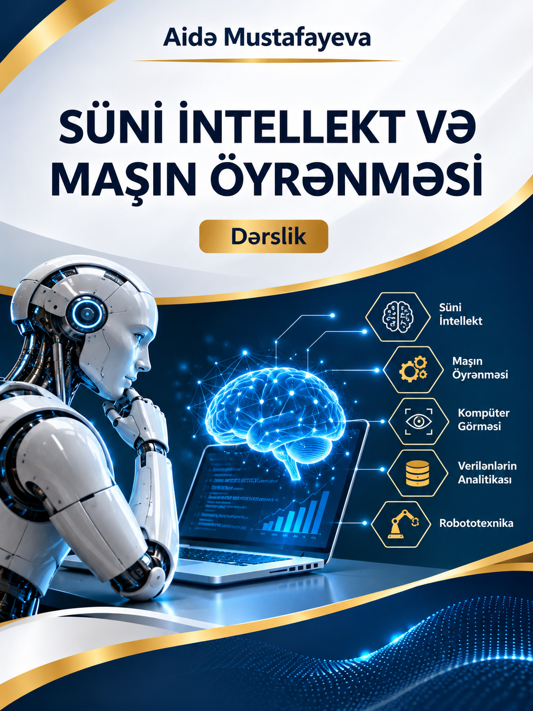

1. Müəllif haqqında
2. Ön söz
Süni intellekt XXI əsrin elmi-texnoloji inkişafını müəyyən edən əsas istiqamətlərdən birinə çevrilmişdir. Böyük həcmli verilənlərin toplanması, hesablama resurslarının əlçatanlığının artması və yeni alqoritmlərin inkişafı kompüter sistemlərinə mürəkkəb nümunələri aşkar etmək, proqnoz vermək, mətn və təsvirləri emal etmək, eləcə də müəyyən qərarları dəstəkləmək imkanı yaratmışdır.
Bu dərslik süni intellekti yalnız hazır proqram kitabxanalarından istifadə etməklə öyrətməyi deyil, onun arxasında dayanan riyazi və alqoritmik mexanizmləri anlamağı qarşıya məqsəd qoyur. Tələbə əvvəlcə problemin necə riyazi təsvir edildiyini, verilənlərin necə hazırlandığını, modelin hansı meyarla öyrədildiyini və nəticənin necə qiymətləndirildiyini öyrənəcək; daha sonra bu bilikləri Python vasitəsilə tətbiq edəcəkdir.
Dərslikdə nəzəri izahlar, hesablanmış nümunələr, kod parçaları, sxemlər, praktik tapşırıqlar, laboratoriya işləri və özünüqiymətləndirmə vasitələri bir-birini tamamlayır. Xüsusi diqqət alqoritmlərin mahiyyətini hazır nəticə kimi qəbul etməməyə, addım-addım araşdırmağa və alınan nəticələri elmi əsaslarla şərh etməyə yönəldilir.
Öyrənmənin dörd pilləsi
3. Elektron dərslik haqqında
Elektron dərslik magistratura səviyyəsində “Süni intellekt və maşın öyrənməsi” fənninin tədrisi üçün hazırlanmış interaktiv tədris resursudur. Məzmun 18 əsas fəsil üzrə qurulmuşdur. Fəsillər süni intellektin tarixi və konseptual əsaslarından başlayaraq riyazi baza, verilənlərin analizi, klassik maşın öyrənməsi, neyron şəbəkələri, dərin öyrənmə, etik və izahlana bilən AI mövzularına doğru inkişaf edir.
Nəzəri bilik
Anlayışlar, prinsiplər, riyazi ifadələr və alqoritmlərin iş mexanizmləri.
Proqramlaşdırma
Python nümunələri, kitabxanalar, kodun izahı və nəticələrin təhlili.
Tədqiqat
Eksperiment, müqayisə, model qiymətləndirilməsi və elmi hesabat.
Dərsliyin struktur xəritəsi
Elektron resursun əsas üstünlüyü mövzular arasında sürətli keçid, mətnin oxunaqlılığının tənzimlənməsi, gecə rejimi, çap/PDF imkanı, daxili axtarış və özünü yoxlama elementləridir. Bu versiyada keçidlər və idarəetmə düymələri lokal işləyir; internet tələb edən xarici resurslar ayrıca işarələnir.
4. Fənnin məqsədi və vəzifələri
Fənnin məqsədi magistrantlarda süni intellekt və maşın öyrənməsinin nəzəri, riyazi və praktiki əsasları üzrə sistemli biliklər formalaşdırmaq, real problemlərin verilənlər və alqoritmlər əsasında modelləşdirilməsi, intellektual modellərin qurulması, öyrədilməsi, qiymətləndirilməsi və nəticələrin elmi şərhi bacarıqlarını inkişaf etdirməkdir.
Fənnin əsas vəzifələri
- Süni intellektin yaranma tarixini, əsas anlayışlarını və inkişaf istiqamətlərini izah etmək.
- Maşın öyrənməsində istifadə olunan riyazi aparatın — xətti cəbr, ehtimal, statistika, törəmə və optimallaşdırmanın tətbiqini öyrətmək.
- Verilənlərin toplanması, təmizlənməsi, çevrilməsi və ilkin təhlili bacarıqlarını formalaşdırmaq.
- Nəzarətli, nəzarətsiz və möhkəmləndirmə əsasında öyrənmə yanaşmalarını müqayisə etmək.
- Reqressiya, təsnifat, klasterləşdirmə və ansambl alqoritmlərini tətbiq etmək.
- Süni neyronların və neyron şəbəkələrinin riyazi iş mexanizmlərini mənimsətmək.
- Python ekosistemində modellərin qurulması və eksperimentlərin aparılması bacarığını inkişaf etdirmək.
- Model nəticələrini uyğun metrikalarla qiymətləndirmək, qərəzlilik və etibarlılıq məsələlərini araşdırmaq.
- Elmi tədqiqat və layihə yanaşması ilə müstəqil intellektual sistem prototipi hazırlamaq.
5. Fənnin təlim nəticələri
Fənni uğurla başa vuran magistrant aşağıdakı bilik və bacarıqları nümayiş etdirməlidir:
| Kod | Təlim nəticəsi | Ölçülə bilən fəaliyyət |
|---|---|---|
| TN1 | Süni intellektin əsas anlayışlarını və inkişaf mərhələlərini izah edir. | Tarixi mərhələləri müqayisə edir, terminləri düzgün tətbiq edir. |
| TN2 | AI/ML məsələlərinin riyazi əsaslarını tətbiq edir. | Vektor, matris, ehtimal, törəmə və itki funksiyası üzrə hesablamalar aparır. |
| TN3 | Verilənləri təhlil və emal edir. | Çatışmayan dəyərləri, kənar qiymətləri və dəyişən tiplərini müəyyən edir. |
| TN4 | Maşın öyrənməsi alqoritmlərini seçir və tətbiq edir. | Ən azı iki modeli eyni verilənlərdə müqayisə edir. |
| TN5 | Neyron şəbəkəsinin əsas mexanizmlərini izah edir. | Perceptron, aktivləşmə, forward və backpropagation addımlarını şərh edir. |
| TN6 | Modelin keyfiyyətini qiymətləndirir. | Uyğun metrikaları hesablayır və nəticələri əsaslandırır. |
| TN7 | Etik və etibarlılıq risklərini təhlil edir. | Qərəzlilik, məxfilik, şəffaflıq və təhlükəsizlik risklərini müəyyən edir. |
| TN8 | Müstəqil AI layihəsi və elmi hesabat hazırlayır. | Problemi, metodologiyanı, eksperimenti və nəticələri sənədləşdirir. |
Öyrənmə nəticələrinin nümayiş etdirilməsi
Təlim nəticəsi yalnız mövzunun oxunması ilə deyil, tələbənin müşahidə edilə bilən işi ilə təsdiqlənir. Buna görə hər fəsildə nəzəri bilik, proqramlaşdırma işi və nəticənin izahı bir-birini tamamlamalıdır.
| Nəticə sahəsi | Tələbənin nümayiş etdirməli olduğu fəaliyyət | Qiymətləndirmə sübutu |
|---|---|---|
| Anlayış və nəzəriyyə | Alqoritmin nəyi həll etdiyini və hansı fərziyyələrə söykəndiyini izah edir. | Şifahi cavab, qısa yazılı izah |
| Riyazi əsaslandırma | Düsturdakı dəyişənləri müəyyən edir, hesablamanı addım-addım aparır. | Həll edilmiş nümunə, hesab cədvəli |
| Proqramlaşdırma | Kodu icra edir, girişləri dəyişir, xətaları tapıb düzəldir. | Notebook, kod və icra nəticəsi |
| Eksperiment | Modeli uyğun verilənlərdə öyrədir və ədalətli müqayisə aparır. | Eksperiment protokolu, metriklər |
| Elmi şərh | Nəticəni, məhdudiyyəti və tətbiq riskini əsaslandırır. | Hesabat, təqdimat və müdafiə |
6. Fənnin öyrənilməsi üçün ilkin biliklər
Fənn sıfırdan başlayan magistrant üçün də mərhələli şəkildə qurulsa da, aşağıdakı ilkin biliklər öyrənmə prosesini asanlaşdırır. Hər hansı mövzuda boşluq olduqda tələbə müvafiq hazırlıq materialını paralel mənimsəyə bilər.
Riyaziyyat
Cəbr, funksiyalar, qrafiklər, vektor və matrislər, törəmənin ilkin anlayışı, ehtimal və təsviri statistika.
Proqramlaşdırma
Dəyişənlər, verilən tipləri, şərt operatorları, dövrlər, funksiyalar, siyahılar və fayllarla iş.
Kompüter savadlılığı
Fayl sistemi, brauzer, əməliyyat sistemi, proqram quraşdırılması və internetdən təhlükəsiz istifadə.
Elmi düşünmə
Problemi müəyyənləşdirmək, fərziyyə qurmaq, müşahidə aparmaq və nəticəni əsaslandırmaq.
7. Süni intellektin öyrənilməsi üzrə yol xəritəsi
AI öyrənilməsi ardıcıl bilik quruculuğu tələb edir. Məsələn, neyron şəbəkəsini düzgün öyrətmək üçün əvvəlcə verilənlərin xüsusiyyətlərini, vektor-matris əməliyyatlarını, itki funksiyasını və optimallaşdırma ideyasını anlamaq vacibdir.
| Mərhələ | Əsas məzmun | Gözlənilən nəticə |
|---|---|---|
| 1. Konseptual baza | AI tarixi, anlayışlar, simvolik və öyrənən sistemlər | AI problemini və tətbiq sahəsini tanımaq |
| 2. Riyaziyyat və alətlər | Vektor, matris, statistika, Python | Sadə hesablamaları kodlaşdırmaq |
| 3. Verilənlər | EDA, təmizləmə, çevirmə | Model üçün keyfiyyətli verilən hazırlamaq |
| 4. Klassik ML | Reqressiya, təsnifat, klasterləşdirmə | Uyğun alqoritm seçmək və müqayisə etmək |
| 5. Deep Learning | Perceptron, backpropagation, CNN və s. | Neyron modelini qurmaq və öyrətmək |
| 6. Tədqiqat | Etika, izahlana bilmə, eksperiment və layihə | Elmi əsaslandırılmış prototip hazırlamaq |
8. Elektron dərslikdən istifadə qaydası
- Mündəricatdan mövzu seçin. Sol paneldəki bölmə adına kliklədikdə səhifə həmin hissəyə keçir.
- Axtarışdan istifadə edin. Sol menyunun yuxarısındakı sahəyə açar söz yazaraq uyğun bölmələri süzün.
- Oxu görünüşünü tənzimləyin. A− və A+ düymələri mətn ölçüsünü dəyişir; gecə rejimi rəng palitrasını dəyişir.
- Çap/PDF funksiyasından istifadə edin. Brauzerin çap pəncərəsində “Save as PDF” seçərək bölməni PDF kimi saxlaya bilərsiniz.
- Şəkil və sxemləri izləyin. Hər fiqurun altında onun məzmununu izah edən başlıq verilir.
- Tapşırıq və yoxlamaları tamamlayın. Fəsil sonundakı sualları müstəqil cavablandırın və nəticəni təhlil edin.
Bu paneldə mətn ölçüsünü və rəng rejimini sınaqdan keçirə bilərsiniz.
9. İstifadə olunan işarələr, simvollar və qısaltmalar
| İşarə / qısaltma | İngiliscə açılışı | İzahı |
|---|---|---|
| AI | Artificial Intelligence | Süni intellekt — intellektual tapşırıqları yerinə yetirən metod və sistemlər sahəsi. |
| ML | Machine Learning | Maşın öyrənməsi — verilənlərdən nümunə və qanunauyğunluq öyrənən metodlar. |
| DL | Deep Learning | Dərin öyrənmə — çoxqatlı neyron şəbəkələrinə əsaslanan yanaşmalar. |
| ANN | Artificial Neural Network | Süni neyron şəbəkəsi. |
| dataset | Dataset | Analiz və model öyrədilməsi üçün istifadə olunan verilənlər toplusu. |
| Feature (X) | Feature | Modelə giriş kimi verilən əlamət və ya dəyişən. |
| Label (y) | Label / Target | Nəzarətli öyrənmədə proqnozlaşdırılan hədəf dəyişən. |
| Model | Model | Verilənlərdən öyrənilmiş parametr və qaydalar sistemi. |
| Loss (L) | Loss Function | Model proqnozunun səhvini ölçən funksiya. |
| η | Learning Rate | Öyrənmə sürəti; optimallaşdırma addımının ölçüsünü müəyyən edir. |
| ∇ | Gradient | Funksiyanın dəyişmə istiqamətini və sürətini göstərən vektor. |
| TP / FP / TN / FN | Confusion Matrix Terms | Təsnifat nəticələrində doğru/m yanlış müsbət və mənfi hallar. |
| EDA | Exploratory Data Analysis | Verilənlərin ilkin tədqiqat xarakterli təhlili. |
| API | Application Programming Interface | Proqram komponentlərinin qarşılıqlı əlaqə interfeysi. |
| GPU | Graphics Processing Unit | Paralel hesablamalar üçün istifadə olunan qrafik prosessor. |
10. Proqramlaşdırma mühitinin hazırlanması
Praktiki məşğələlərdə əsas proqramlaşdırma dili Python olacaq. Başlanğıc mərhələdə tələbələrə brauzer üzərindən işləyən Google Colab mühiti tövsiyə edilir. Daha sonra lokal kompüterdə Python və Visual Studio Code quraşdırılaraq layihələr müstəqil idarə oluna bilər.
Google Colab
Quraşdırma tələb etməyən bulud əsaslı Jupyter Notebook mühiti. Python kodunu brauzerdə icra etmək üçün uyğundur.
Python
Ümumi təyinatlı proqramlaşdırma dili. ML və elmi hesablamalar üçün geniş ekosistemə malikdir.
Anaconda / Jupyter
Elmi Python mühiti və notebook əsaslı interaktiv proqramlaşdırma.
10.1. Google Colab-da ilk notebook
- Google Colab səhifəsini açın və Google hesabınızla daxil olun.
- “New Notebook” seçərək yeni notebook yaradın.
- Aşağıdakı kodu ilk hüceyrəyə daxil edin və Shift+Enter ilə icra edin.
- Nəticənin ekranda göründüyünü yoxlayın və notebook-u Google Drive-da saxlayın.
print("Salam, Süni İntellekt!")
ad = "Magistrant"
movzu = "Maşın öyrənməsi"
print(f"{ad}, bu gün {movzu} öyrənirik.")
Salam, Süni İntellekt!Magistrant, bu gün Maşın öyrənməsi öyrənirik.10.2. Əsas kitabxanaların quraşdırılması
Google Colab-da NumPy, Pandas və Matplotlib adətən əvvəlcədən mövcuddur. Lokal mühitdə terminalda aşağıdakı əmri icra etmək olar:
python -m pip install numpy pandas matplotlib scikit-learn jupyter
| Kitabxana | Təyinatı | Rəsmi sənədləşmə |
|---|---|---|
| NumPy | Massivlər, vektor və matris hesablamaları | numpy.org/doc |
| Pandas | Cədvəl tipli verilənlərin emalı | pandas.pydata.org/docs |
| Matplotlib | Qrafik və vizuallaşdırma | matplotlib.org |
| Scikit-learn | Klassik maşın öyrənməsi alqoritmləri | scikit-learn.org |
| PyTorch | Dərin öyrənmə və tensor əməliyyatları | pytorch.org |
| TensorFlow | Neyron şəbəkələri və ML platforması | tensorflow.org |
Tamamlanıb: 0 / 4
11. Laboratoriya işlərinin icrası və qiymətləndirilməsi qaydaları
Laboratoriya işləri nəzəri biliklərin praktik tətbiqinə, proqramlaşdırma bacarıqlarının inkişafına və tədqiqat mədəniyyətinin formalaşmasına xidmət edir. Hər laboratoriya işi tələbənin müstəqil fəaliyyəti, kodun izahı və nəticələrin şərhi əsasında qiymətləndirilir.
11.1. Laboratoriya işinin standart mərhələləri
- Məqsəd və problem: işin məqsədini və həll ediləcək məsələni öz sözlərinizlə ifadə edin.
- Nəzəri hazırlıq: istifadə edilən anlayışları, düsturları və alqoritmin məntiqini izah edin.
- Mühitin hazırlanması: notebook, kitabxana, verilənlər və fayl yollarını yoxlayın.
- İcra: kodu mərhələlərlə yazın və hər mərhələnin nəticəsini yoxlayın.
- Nəticələrin təhlili: cədvəl, qrafik və metrikaları izah edin; gözlənilən nəticə ilə müqayisə aparın.
- Hesabat: məqsəd, nəzəri hissə, kod, nəticə, müzakirə və istifadə olunan mənbələri təqdim edin.
- Müdafiə: müəllimin suallarına cavab verin və kodun əsas hissələrini izah edin.
11.2. Laboratoriya hesabatının tövsiyə olunan strukturu
| Bölmə | Hesabatda təqdim edilməli məlumat |
|---|---|
| Başlıq | Universitet, fakültə, fənn, laboratoriya nömrəsi, tələbənin adı və tarix. |
| Məqsəd | İşin məqsədi və həll olunan problem. |
| Nəzəri əsas | Əsas anlayışlar, düsturlar və alqoritm. |
| İcra mühiti | Python versiyası, kitabxanalar, dataset və texniki vasitələr. |
| Proqram kodu | Şərhlərlə birlikdə işlək kod və lazım gəldikdə nəticə ekran görüntüsü. |
| Nəticələr | Hesablamalar, qrafiklər, cədvəllər və model metrikaları. |
| Müzakirə | Nəticələrin mənası, məhdudiyyətlər və mümkün səhv mənbələri. |
| Nəticə və mənbələr | Öyrənilənlər və istifadə olunmuş etibarlı mənbələr. |
11.3. Qiymətləndirmə meyarları
Aşağıdakı bölgü laboratoriya işlərinin vahid və şəffaf qiymətləndirilməsi üçün tövsiyə olunan 100 ballıq rubrikadır. Fənnin rəsmi sillabusunda fərqli bölgü təsdiq edilərsə, həmin bölgü əsas götürülməlidir.
| Meyar | Çəki | Qiymətləndirilən göstərici |
|---|---|---|
| Nəzəri hazırlıq | 20 bal | Anlayışların və metodun düzgün izahı. |
| Kodun düzgünlüyü | 25 bal | Kodun işləməsi, məntiqi və təkrar icra oluna bilməsi. |
| Nəticələrin təhlili | 25 bal | Hesablamaların, qrafiklərin və metrikaların şərhi. |
| Müstəqillik və yaradıcılıq | 15 bal | Əlavə sınaq, müqayisə və ya təkmilləşdirmə. |
| Hesabat və müdafiə | 15 bal | Struktur, istinadlar, təqdimat və suallara cavab. |
Hər meyar üzrə topladığınız balı daxil edin. Maksimumlar müvafiq olaraq 20, 25, 25, 15 və 15-dir.
Yekun nəticə: — / 100
11.4. Akademik dürüstlük və təhlükəsiz iş
- İstifadə olunan kod, dataset, şəkil və mətn mənbələri göstərilməlidir.
- Başqasının kodunu öz işi kimi təqdim etmək yolverilməzdir; istifadə edilmiş nümunələrə istinad verilməlidir.
- Şəxsi və məxfi məlumatlar açıq notebook və repozitoriyalara yerləşdirilməməlidir.
- Eksperimentlərdə nəticəni dəyişdirən təsadüfi toxum (random seed), kitabxana versiyaları və verilənlərin mənbəyi qeyd olunmalıdır.
- Generativ AI alətlərindən istifadə edildikdə onların hansı məqsədlə istifadə olunduğu müəllimin müəyyən etdiyi qaydada açıqlanmalıdır.
12. Fəsillərin öyrənilməsi üçün tövsiyə olunan iş dövrü
Hər mövzunu eyni ardıcıllıqla işləmək tələbəyə bilikləri mərhələli toplamağa və layihə hazırlamaq bacarığını inkişaf etdirməyə kömək edir. Müəllim fənnin təqvim planına uyğun olaraq müddətləri dəyişə bilər.
- Mövzuya hazırlıq: əvvəlki bilikləri və yeni mövzunun əsas terminlərini nəzərdən keçirin.
- Nəzəri oxu: anlayışları, diaqramları, düsturları və onların dəyişənlərini qeyd edin.
- Əl ilə nümunə: kiçik verilənlər üzərində alqoritmin ən azı bir addımını özünüz hesablayın.
- Kod laboratoriyası: notebook-u icra edin; nəticəni dəyişən girişlər və parametrlərlə yoxlayın.
- Müstəqil tapşırıq: nümunədəki dataset və ya parametrlərdən fərqli variantı həll edin.
- Refleksiya: nə öyrəndiyinizi, hansı çətinliklə qarşılaşdığınızı və nəticənin məhdudiyyətini yazın.
Həftəlik fərdi öyrənmə jurnalı
Yekun metodiki tövsiyələr
Bu giriş bölməsini tamamladıqdan sonra tələbə dərsliyin strukturunu, fənnin məqsəd və nəticələrini, öyrənmə ardıcıllığını, proqramlaşdırma mühitinin hazırlanmasını və laboratoriya hesabatının tələblərini bilməlidir. Əsas mühazirələrə keçməzdən əvvəl Python mühitinin işlək olduğunu yoxlamaq və yol xəritəsindəki mərhələləri nəzərdən keçirmək tövsiyə olunur.